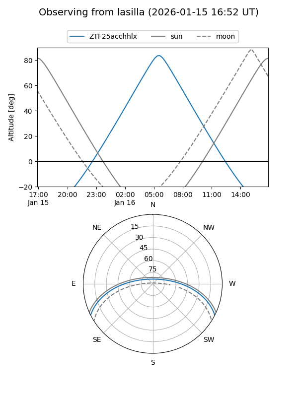
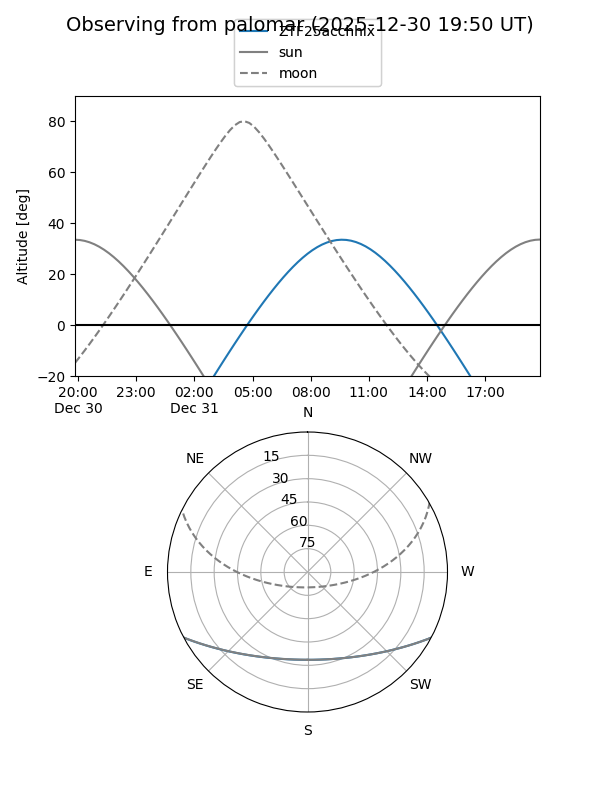

ZTF25acchhlx
Target ZTF25acchhlx at 2025-12-31 17:00
Aliases and brokers:
FINK:
Lasair:
ALeRCE:
alt names
ZTF25acchhlx (ztf,fink_ztf)
Coordinates:
equatorial (ra, dec) = 127.2635,-23.01468
equatorial (HMS+DMS) = 08:29:03.24,-23:00:52.86
galactic (l, b) = (244.8143,+9.21687)
Flags:
Photometry:
last ztfg=20.06, ztfr=19.91
1 ztfg, 2 ztfr detections
Lightcurve

Visibility


Additional plots